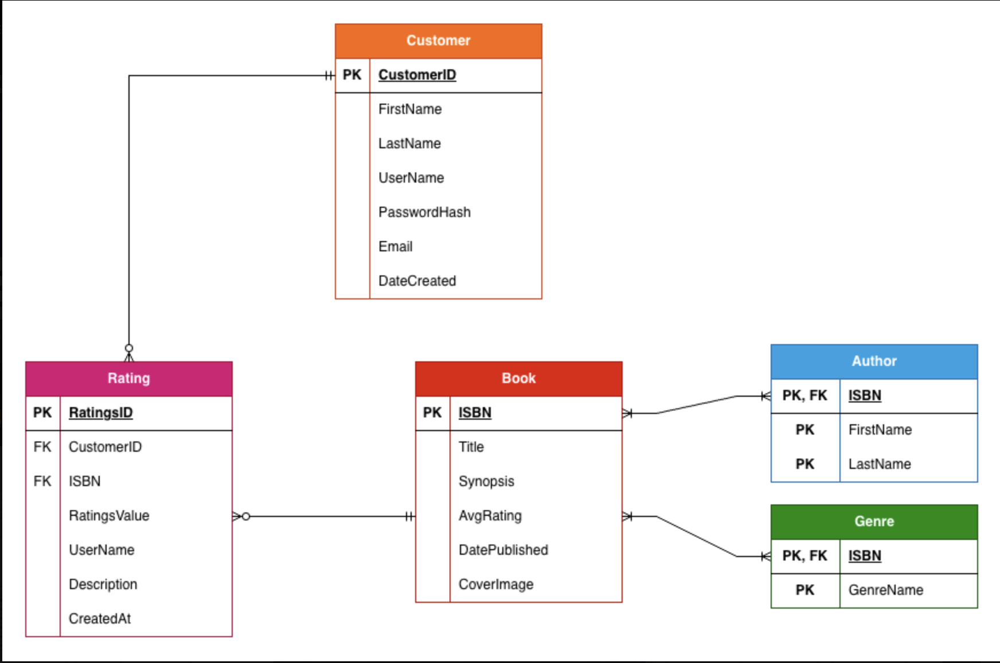
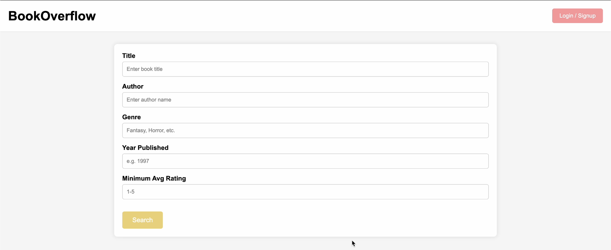
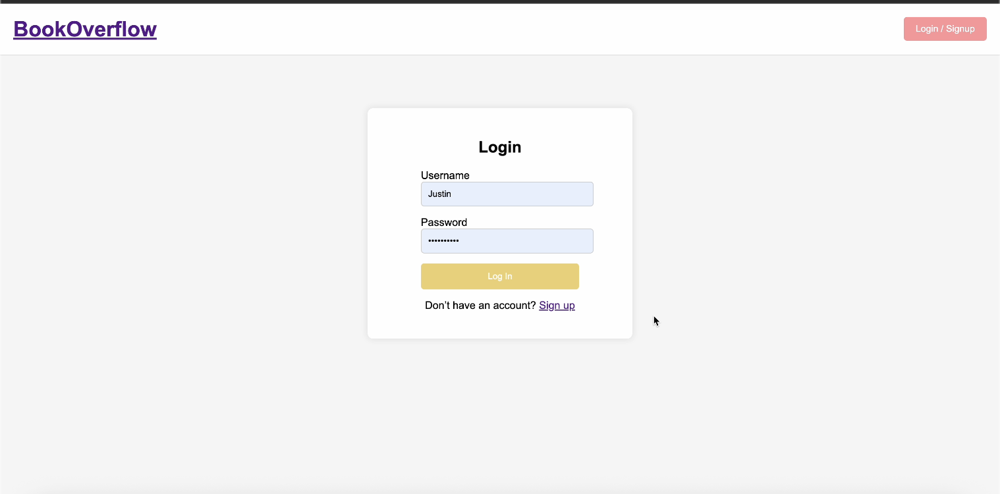
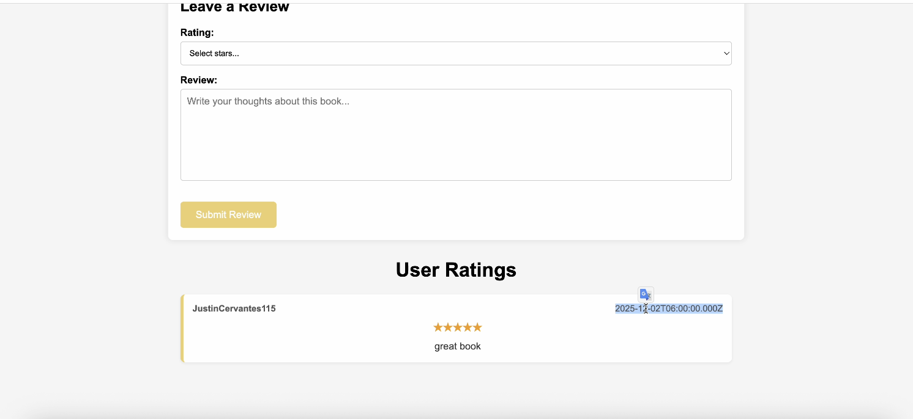

WEB DEVELOPMENT
Book Overflow
A website that allows users to search for books and leave reviews on them.
Overview
This was the first and only project for CS 480 (Database Systems). I collaborated in a group of 6 (including myself) to create a website that allows users to search for books and leave reviews on them. We used Django as our web framework and MySQL as our database; we also used an APi key to get data and store it in our database. The website allows users to create an account, search for books, leave reviews, and view other users' reviews.
Project Information
Full-stack Developer
February 2025 - May 2025
Completed
Browser
Key Features
- Search for bllks by title, author, or genre
- Leave reviews and ratings for books
- Create a user profile with an email and password
Screenshots




Technical Highlights
- Used a database to store book and user information
- Used SQL queries to retrieve and filter data
Challenges
One challenge I faced was adding the review component of the website. ...
Lessons Learned
- How to structure larger projects
- Debugging complex state issues
Future Improvements
- Add multiplayer support
- Improve animations